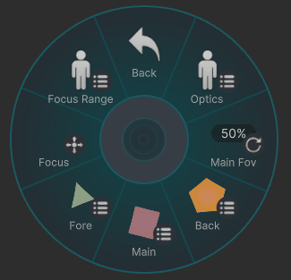
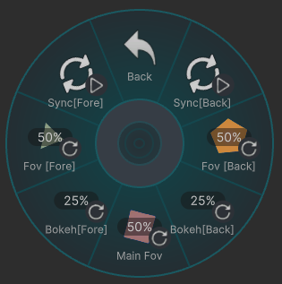
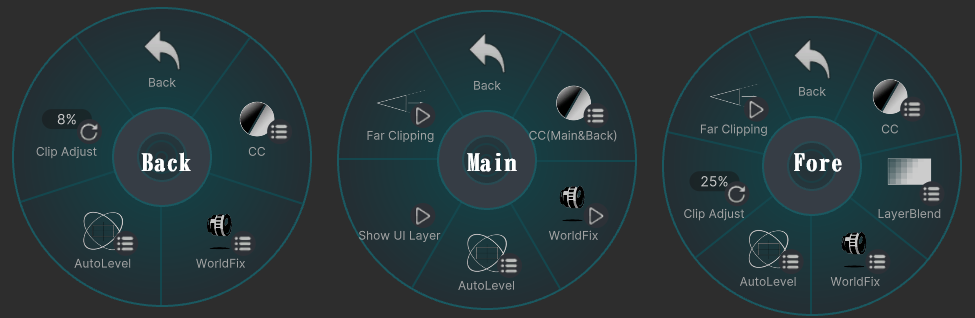
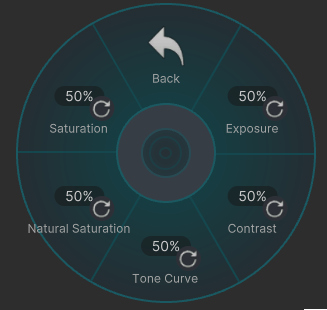
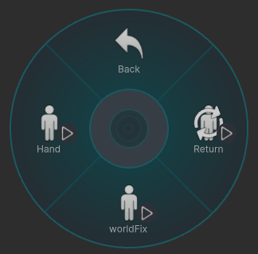
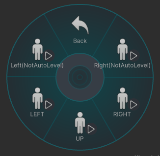
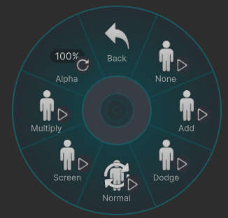
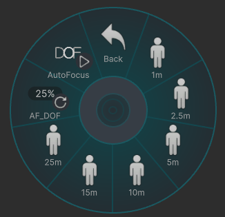

Lens

Optics
カメラの視野角やボケの強さを変更できます。
FOVの設定範囲は 12mm ～ 1000mm 相当です。
- 0% ：12mm
- 25% ：53mm
- 50% ：94mm
- 75% ：135mm
- 100% ：1000mm

-
[Main Fov]
メインカメラの FOV を変更できます。 -
[Sync]
ON 状態では、メインカメラの FOV と同期します。 -
[Fov [Fore]] / [Fov [Back]]
これらを選択すると、対応する [Sync] は自動的に OFF になります。 -
[Bokeh [Fore]] / [Bokeh [Back]] ボケの強さを変更します。
Back / Main / Fore

共通設定
CC
各カメラで画像補正が出来ます。

- Exposure : 露出
- Contrast : コントラスト
- Tone Curve : トーンカーブ
- Natural Saturation : 自然な彩度
- Saturation : 彩度
WorldFix
各カメラをワールドに固定できます。

- Return ： メインカメラの位置に戻ります。
- WorldFix ： カメラをワールドに固定します。
- Hand ： カメラを手元と同期します。
AutoLevel

各カメラの傾きを 左・正面・右 に固定できます。
Back
Clip Adjust
Back カメラの Far の位置を、手前側に微調整できます。
Main
Show UI Layer
ON にすると、UI Layer を描画できます。(メインのみ)
Far Cliping
ON にすると、Mainカメラの Far が Backカメラの Far と同じになります。
Backカメラで遠景まで含めて、画面全体を写せるようになります。
Fore
LayerBlend
前景の合成モードを選択できます。

- None ：前景を描画しません
- Add ：加算
- Dodge ：覆い焼きカラー
- Normal ：通常合成
- Screen ：スクリーン
-
Multiply ：乗算
-
Alfa ：前景の透明度を変更できます
補足
- Normal以外 を選択した場合、メインカメラの Far は Fore カメラの Far と同じになります。
- Normal では透明度を変更できません。
- Normal 選択時は、Depth がある部分は後方を上書きし、Depth がない部分は Screen 合成されます。
clip Adjust
Fore カメラの Far の位置を、奥側へ微調整できます。
Clipping Far Range
ON にすると、Foreカメラの Far が Backカメラの Far と同じになります。
Foreカメラで遠景まで含めて、画面全体を写せるようになります。
Focus
ピントを合わせる距離と、ピントが合う範囲を調整できます。
- ↑ / Farther：フォーカス距離を奥へ移動
- ↓ / Closer ：フォーカス距離を手前へ移動
- ← / Widen：フォーカス範囲を広げる
- → / Narrow：フォーカス範囲を狭くする
Focus Range

フォーカス距離を、一定の距離から選択できます。
フォーカス範囲は 約 1.5m になります。
AutoFocus
VRCRaycastを使用して、カメラの中心部分にある コライダー にフォーカスを合わせます。
VRChatの仕様により、自身かワールドのコライダーにしか反応しません。
- AF_DoF はAF後のフォーカス範囲をある程度に設定できます。